Kafbat UI (açık kaynak, Apache-2.0) tabanlı Kafka arayüzümüz: uygulama ne işe yarar, nasıl kullanılır ve fork ile neler ekledik.
07.07.2026 | 20 milyon mesajlık gerçek test ortamında canlı doğrulandı
Bu doküman teknik rapor gibi değil, ürünü kullanacak birinin hızlıca anlayacağı şekilde yazıldı. Önce Kafka UI'ın ne işe yaradığını anlatır, sonra fork ile eklenenleri ve son olarak Docker tarafında hangi ayarın nereden değişeceğini gösterir.
Eklenenlerin kısa özeti:
| Özellik | Ne işe yarıyor |
|---|---|
| 1. Takılmayan arama | Orijinal araçta sonuçsuz mesaj araması, topic'in tamamını tarayıp dakikalarca kilitleniyordu. Artık arama bir "tarama bütçesi" ile saniyeler içinde duruyor, istenirse kaldığı yerden devam ediyor. |
| 2. Hedefli arama | Arama artık tüm mesajda, sadece Key'de, sadece Value'da veya sadece Headers içinde yapılabiliyor. Böylece yanlış alandaki eşleşmeler sonucu kirletmiyor. |
| 3. Tüm topic arama | Sonuç çıkmayan sayfada sürekli Next'e basmak gerekmiyor. Search entire topic kalan dilimleri otomatik tarıyor, canlı sayaç gösteriyor ve Stop ile duruyor. |
| 4. Sıralama ve tarih aralığı | Yüklenen mesajlar Offset, Partition ve Timestamp'e göre sıralanabiliyor. Since time moduna bitiş tarihi eklendi; iki tarih arası tek adımda inceleniyor. |
| 5. Grafik butonu | Topic sayfasındaki tek bir butonla, mesajların içindeki JSON alanlarından anında grafik çizen bir araç açılıyor (dağılım, zaman serisi, toplam, ortalama). Örnekleme, temsili örnekleme ve tüm veriyi kesin sayma modlarıyla. Piyasadaki ücretsiz araçların hiçbirinde bu yok. |
| 6. Docker ayarları | Hangi compose değişkeninin ne işe yaradığı açıklandı: broker adresi, dinamik config, arama bütçesi, JMX metrikleri ve kalıcı Kafka verisi. |
| 7. Tek adres, tek komut | Her şey tek bir docker compose up -d ile
ayağa kalkıyor ve tek porttan (80) sunuluyor: ana arayüz /, grafik aracı
/viz/. |
Kafka UI, Kafka'yı komut satırı kullanmadan tarayıcıdan izlemeye ve yönetmeye yarayan bir web arayüzüdür. Kafka'nın kendi ekranı yoktur; içinde ne aktığını görmek normalde terminal komutları gerektirir. Bu araç o ihtiyacı tek adresten karşılar: topic'lere bakmak, mesajların içeriğini okumak, test mesajı göndermek, tüketicilerin nerede kaldığını izlemek.
Sol menü dört ana bölümden oluşur: Dashboard (bağlı cluster'ların listesi ve sağlık özeti), Brokers (sunucu sağlığı), Topics (mesaj kanalları, asıl çalışma alanı) ve Consumers (tüketici grupları ve lag takibi).
Günlük kullanımın başladığı yer. Tüm topic'ler partition sayısı, mesaj adedi ve disk boyutuyla listelenir. Buradan:
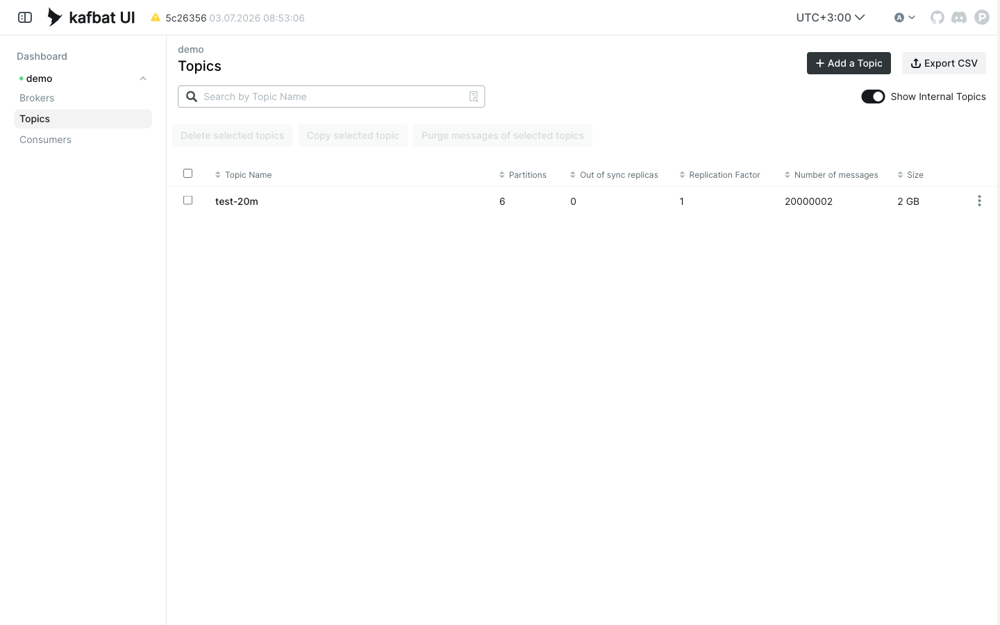
Bir topic'e tıklayıp Messages sekmesine geçince en yeni mesajlar listelenir. Bir satıra tıklayınca mesajın içeriği renklendirilmiş JSON olarak açılır; Key / Value / Headers sekmeleriyle mesajın her parçası incelenir. Üstteki araç çubuğundan:
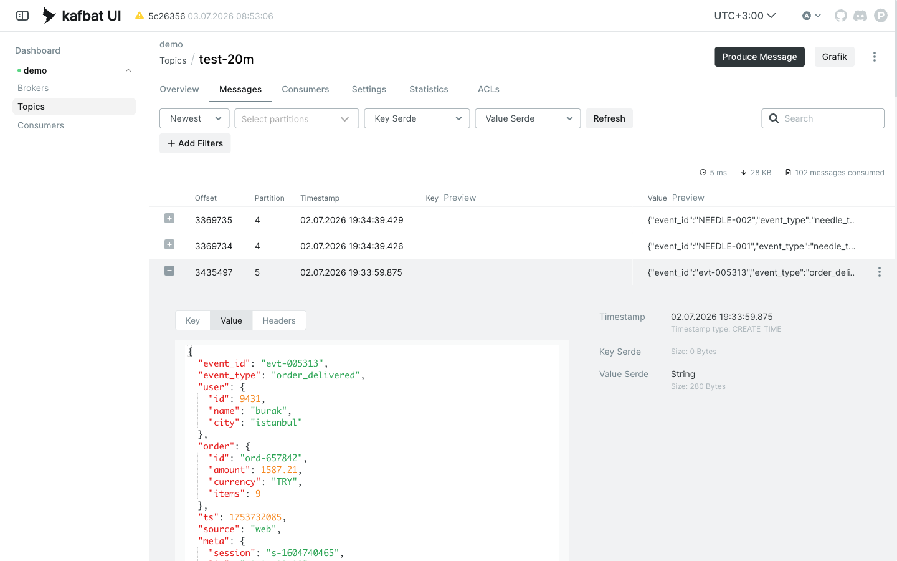
Topic sayfasının sağ üstündeki Produce Message butonu, elle mesaj göndermek içindir: key, value ve header girilir, istenirse partition seçilir. En sık kullanımı: bir tüketici uygulamayı hızlıca test etmek veya bir hata senaryosunu yeniden üretmek.
Kafka'da her tüketici uygulama bir "consumer group" ile okur ve kaldığı yer (offset) kaydedilir. Bu ekran her grubun hangi topic'i nereye kadar okuduğunu ve lag değerini gösterir. Lag, yazılmış ama o grup tarafından henüz okunmamış mesaj sayısıdır: sıfıra yakınsa tüketici yetişiyor, sürekli büyüyorsa uygulama geride kalıyor veya durmuş demektir. Üretimde en çok bakılacak ekran budur.
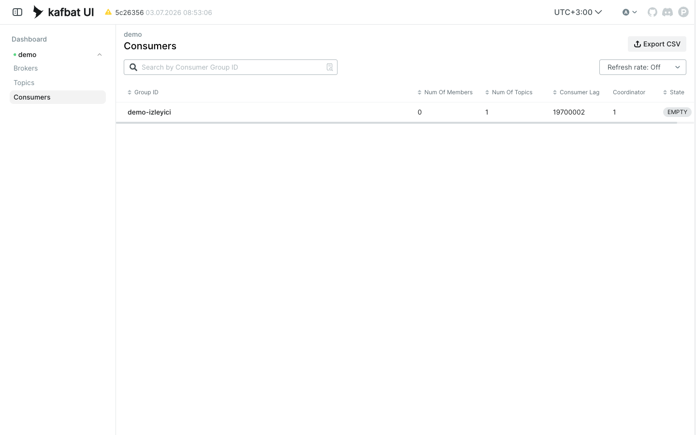
Kafka sunucularının (broker) durumu tek bakışta: kaç broker ayakta, disk kullanımı, partition'ların sağlığı (online / in-sync / out-of-sync). Bir şeylerin ters gittiğinden şüphelenildiğinde ilk bakılacak yer.
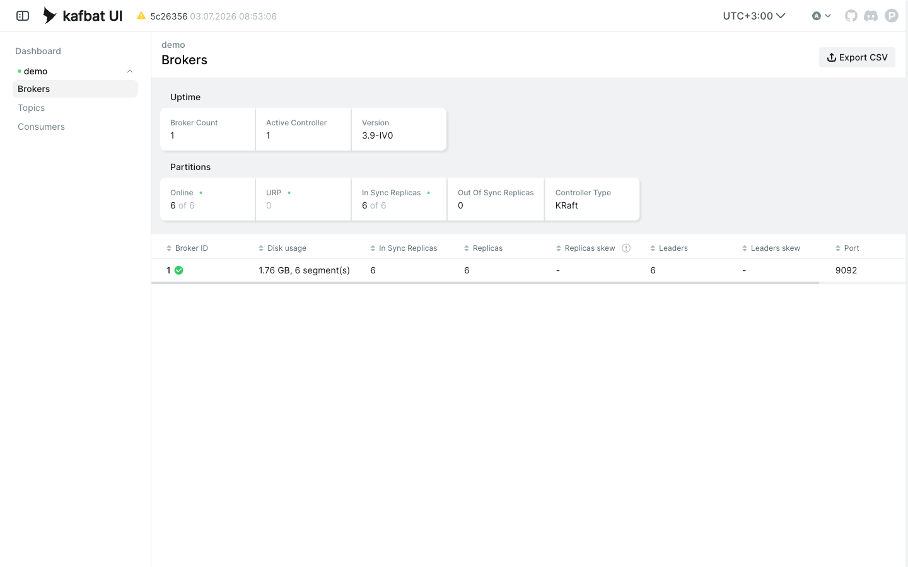
| Sekme | Ne gösterir / ne yapılır |
|---|---|
| Overview | Partition dağılımı, offset'ler, toplam mesaj sayısı, saklama politikası. |
| Consumers | Sadece bu topic'i okuyan gruplar ve lag'leri. |
| Settings | Topic ayarları (saklama süresi, boyut limitleri vb.), düzenlenebilir. |
| Statistics | İstenirse topic taranıp boyut/anahtar istatistikleri çıkarılır. |
Teknik olmayan bir özet: bu araç Kafka'nın önüne konmuş canlı bir vitrin ve kumandadır. Verinizi kendi içine taşımaz, çoğaltmaz; işin ağırlığı hep Kafka'da kalır, araç yalnızca sorar ve gösterir. Ekrandan bir istek geçtiğinde izlediği yol:
"Grafik" butonu bu zincirin yanında ayrı bir
yol açar: Tarayıcı → nginx (/viz/) → kafka-viz → Kafka. Ana araç sade
kalsın diye grafik işini ayrı bir servis yapar.
| Soru | Kısa cevap |
|---|---|
| Verimi kendine kopyalıyor mu? | Hayır. Mesajlarınızın kopyasını tutmaz; her ekranı açtığınızda Kafka'ya o an sorar ve gelen cevabı gösterir. Yalnızca pano ve metrik gibi özet bilgileri, kısa aralıklarla (varsayılan her 30 saniyede bir) yenilenen bir özet olarak tutar. Gördüğünüz mesajlar her zaman canlı Kafka'dır, eski bir kopya değil. |
| 20 milyon mesajı nasıl anında açıyor? | Hepsini okumaz. Kafka'nın kendi okuma mekanizmasıyla doğru noktaya atlar (offset), bir ekranlık mesaj okur ve gösterir. "Daha eski" dedikçe bir sonraki sayfayı ister. Bu yüzden topic ne kadar büyük olursa olsun açılış hızlıdır. |
| Mesaj sayısı ve "lag" nereden geliyor? | Kafka'nın kendi kayıtlarından (offset'ler). Her tüketici grubunun nereye kadar okuduğu Kafka'da yazılıdır; araç bunu okuyup grubun ne kadar geride kaldığını (lag) hesaplar. Kendi sayacını tutmaz. |
| Broker metrikleri nereden? (Metrics sekmesi) | Kafka sürecinin içindeki canlı sağlık sayaçlarından (JMX). Araç bu sayaçları okuyup gösterir. Bu sürümde JMX'i açtık; artık Metrics sekmesi gerçek broker/JVM metriklerini getiriyor. |
| Topic açma, mesaj gönderme gibi işler? | Araç bir uzaktan kumanda gibi çalışır: bu komutları Kafka'nın yönetim arayüzüne iletir, işi Kafka yapar. |
| Yanlışlıkla bir şeyi bozar mı? | Normal kullanımda hayır, sadece bakar (salt okur). Değiştiren işlemler (silme, temizleme, ayar değiştirme) ayrı ve belirgin butonlardadır; kendi kendine tetiklenmez. |
Buraya kadar anlatılanlar aracın hazır gelen yetenekleri. Aşağıdaki bölümler ise bizim eklediklerimiz.
Kafbat UI'da bir topic içinde mesaj ararken aradığınız metin yoksa, araç eşleşme bulana kadar topic'in tamamını taramaya devam ediyor. 20 milyon mesajlık bir topic'te bu, dakikalarca dönen ve durdurulamayan bir ekran demek. Bu, projenin kendi kayıtlarında da bilinen bir hata (upstream issue #442) ama henüz çözülmemişti.
Aramaya bir tarama bütçesi ekledik: arama en fazla 500.000 kayıt tarar veya 30 saniye çalışır, hangisi önce dolarsa orada durur. Durduğunda o ana kadar bulunanlar ekrandadır ve "Next" butonuyla kaldığı yerden bir sonraki dilimi taratabilirsiniz. Yani kontrol artık kullanıcıda: küçük dilimler halinde istediğiniz kadar derine inersiniz, araç asla kilitlenmez.
20 milyon mesajlık topic'te hiç eşleşmeyen bir arama: orijinalde süresiz takılıyordu, fork'ta 3,2 saniyede durdu (aşağıda sağ üstte 3244 ms, 85.289 mesaj tarandı; sol altta devam için Next butonu).
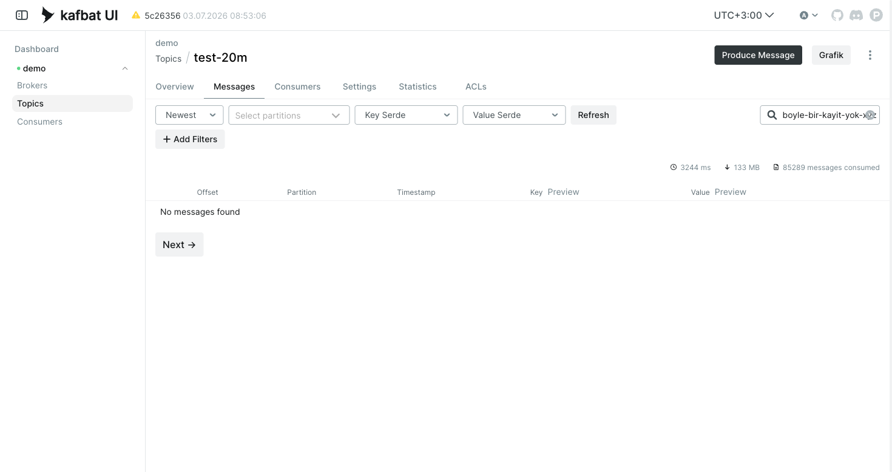
kafka.polling.maxScannedRecords (varsayılan 500.000) ve
kafka.polling.responseTimeoutMs (varsayılan 30.000 ms). Docker ortam değişkeni olarak:
KAFKA_POLLING_MAXSCANNEDRECORDS, KAFKA_POLLING_RESPONSETIMEOUTMS.Eski arama tek bir metni mesajın her yerinde arıyordu: Key, Value ve Headers birlikte taranıyordu. Bu pratik ama kalabalık topic'lerde gürültülü. Örneğin sadece header'daki bir correlation id'yi aramak isterken value içinde geçen aynı metin de sonuç getiriyordu; veya sadece key'e bakmak isteyen kullanıcı gereksiz value eşleşmelerini ayıklamak zorunda kalıyordu.
Search kutusunun yanına bir hedef seçici eklendi. Varsayılan All eski davranışı korur.
Kullanıcı isterse aramayı yalnız Key, yalnız Value veya yalnız Headers ile
sınırlar. Seçim URL parametresine de yazılır: stringFilterTarget=KEY|VALUE|HEADERS.
Böylece sayfa yenilenince, paylaşılınca veya kaydedilmiş filtre geri gelince aynı hedef korunur.
StringFilterTargetDTO parametresi eklendi; OpenAPI ve TypeSpec sözleşmesi güncellendi.ALL kabul
edilir. Bu yüzden eski linkler ve mevcut kullanım bozulmaz.Bir sayfada eşleşme yoksa kullanıcı kalan topic'i aramak için sürekli Next butonuna basmak zorundaydı. Büyük topic'lerde bu elle takip edilecek bir iş olmaktan çıkıyor.
Boş sonuçtan sonra Search entire topic akışı eklendi. Araç kalan dilimleri otomatik gezer; eşleşme bulursa durur, topic sonuna gelirse bittiğini söyler. Tarama sırasında kaç mesajın incelendiği canlı sayaçla görünür ve kullanıcı istediği an Stop ile durdurabilir.
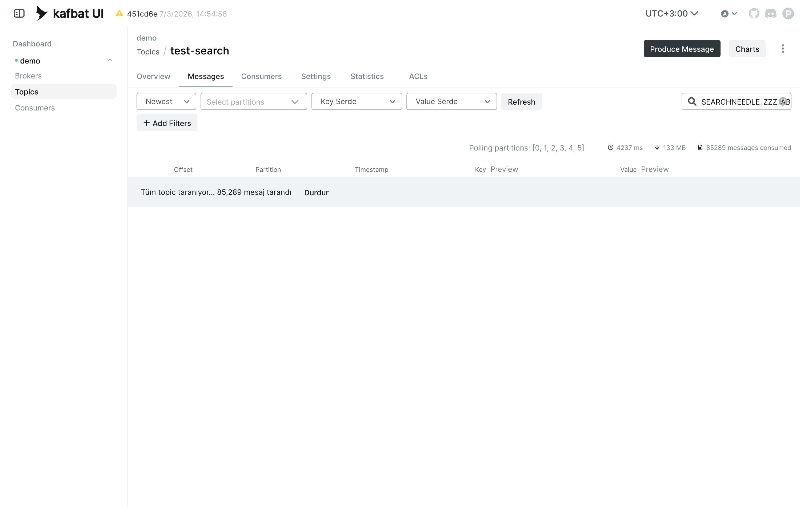
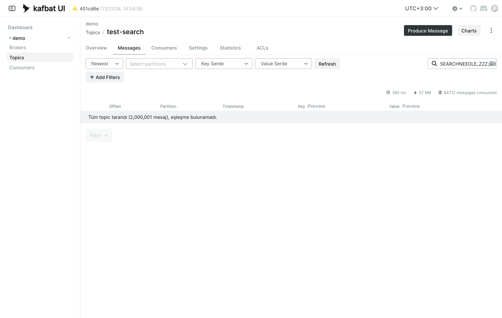
Messages tablosunda Offset, Partition ve Timestamp başlıkları tıklanabilir hale geldi. İlk tıklama azalan, ikinci tıklama artan sıralar; ok ikonu yönü gösterir. Bu sıralama sunucuda tüm topic'i yeniden indekslemez, ekranda yüklenmiş / taranmış mevcut sonuçlar üzerinde çalışır. Live modda doğal akış sırası bozulmasın diye kapalıdır.
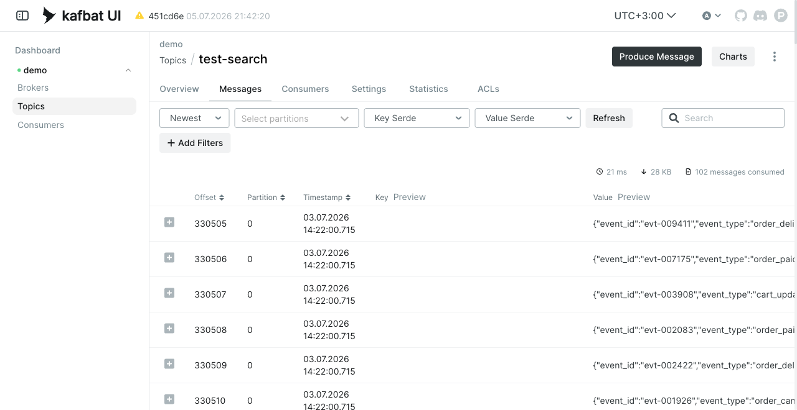
Since time modunda artık başlangıç tarihinin yanına opsiyonel bir bitiş tarihi eklenir. Bitiş boşsa eski davranış aynen kalır. Bitiş seçilirse mesajlar başlangıçtan okunur ve seçilen son ana kadar gösterilir; akış seçilen aralığın dışına çıktığında "selected range end" notuyla durur. Böylece "şu iki saat arasında ne oldu?" sorusu tek işlemle cevaplanır.
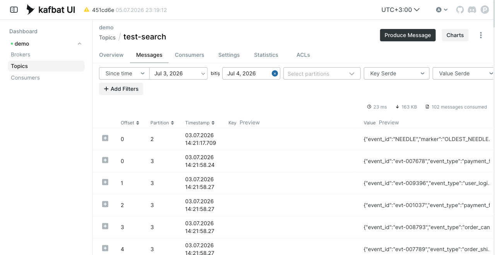
Pazar araştırmamızda gördük: ücretsiz Kafka arayüzlerinin hiçbiri mesajların içeriğinden grafik üretemiyor. "Bu topic'te hangi event tipi ne kadar var?", "dakikada kaç mesaj akıyor?" gibi sorular için veriyi dışarı çekip elle analiz etmek gerekiyordu.
İki parça:
user.city) ve seçilen alan için grafik çizer. Veriyi
nasıl okuduğu seçilebilir (aşağıdaki örnekleme modları).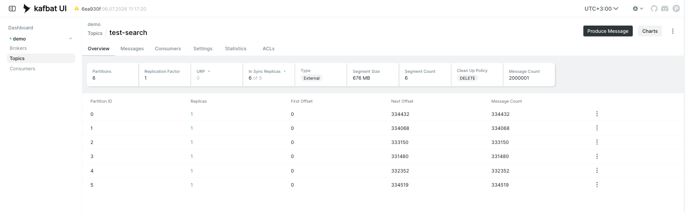
20 milyonluk bir topic'i her açılışta baştan sona okumak yavaş olur. Bunun yerine kafka-viz üç mod sunar; hangi soruyu sorduğunuza göre hız ile kesinlik arasında seçim yaparsınız:
| Mod | Ne yapar | Ne zaman |
|---|---|---|
| Son N (hızlı) | Topic'in sonundan (en güncel) örnek alır. Saniyeler içinde sonuç. | Şu anki duruma hızlı bakış. |
| Yayılmış (temsili) | Örneği topic'in başından sonuna eşit aralıklarla alır; dağılım tüm veriyi temsil eder. Çok sayıda konumdan okuduğu için Son N'den yavaştır (bu topic'te onlarca saniye). | Genel dağılımın doğru olması gerektiğinde. |
| Tümü (kesin) | Tüm mesajları okuyup kesin sayar (akış halinde, bellek şişmez). Yavaş. | Kesin rakam gerektiğinde (yalnız değer dağılımı). |
Örnek boyutu 5 bin ile 1 milyon arasında seçilir. Her grafiğin altında artık gördüğünüz mesaj / toplam mesaj (yüzde kapsam) ve kullanılan mod yazar; hangi kontrolde ne kadar süreceğine dair bir tahmin ipucu da gösterilir.
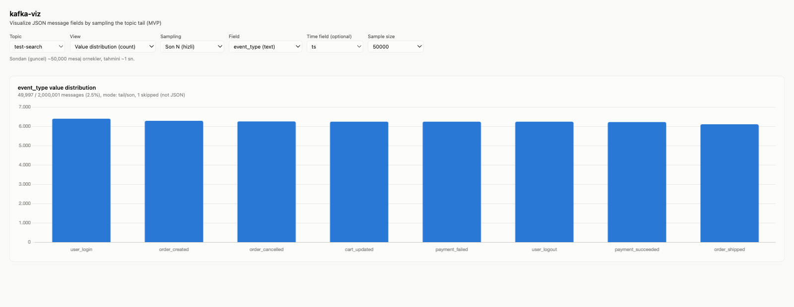
| Görünüm | Cevapladığı soru | Örnek |
|---|---|---|
| Değer dağılımı | Hangi değerden kaç adet var? | event_type'a göre mesaj sayıları |
| Zaman serisi | Dakikada kaç mesaj akıyor? | Trafik yoğunluğu, ani düşüş/artış |
| Zaman içinde toplam | Sayısal bir alanın toplamı nasıl seyrediyor? | order.amount ile dakikalık ciro |
| Zaman içinde ortalama | Sayısal bir alanın ortalaması nasıl seyrediyor? | Ortalama sepet tutarı |
test-20m topic'inde (20.000.002 mesaj) her mod gerçek bir tarayıcıda otomatik test edildi (Playwright, izole Chromium). Yedi senaryonun tamamı geçti. Ölçülen süreler:
| Senaryo | Sonuç | Süre |
|---|---|---|
Son N (tail), event_type | Grafik güncellendi, %0,25 kapsam | ~0,6 sn |
Yayılmış (spread), event_type | Grafik güncellendi, baştan sona temsili | ~34 sn |
Tümü (full), event_type | 20.000.002 / 20.000.002 (%100), kayıp yok | ~115 sn |
| Tümü: tarama sırasında UI | Görünüm ve örnek kilitli, grafik soluk, "taranıyor" yazısı | anında |
| Tümü: alan değişince | Eski "%100" kalmıyor; grafik soluklaşıp "taranıyor" diyor, sonra doğru alana güncelliyor | ~84 sn |
Tarama sürerken alan keşfi (/api/fields) | Bloke olmuyor, hızlı cevap | ~0,3 sn |
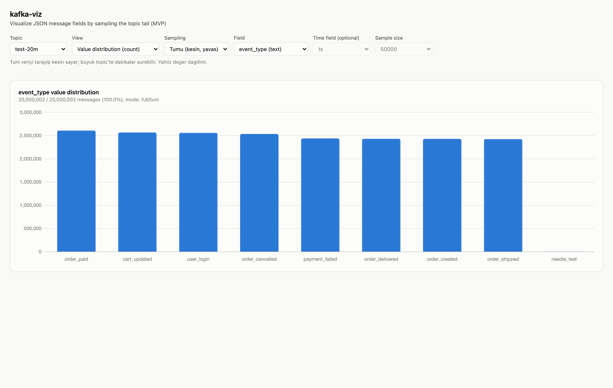
event_type için 20 milyonun tamamı kesin sayıldı
(20.000.002 / 20.000.002, %100). Grafik nettir ve "%100" gerçekten gösterilen veriyle uyumludur.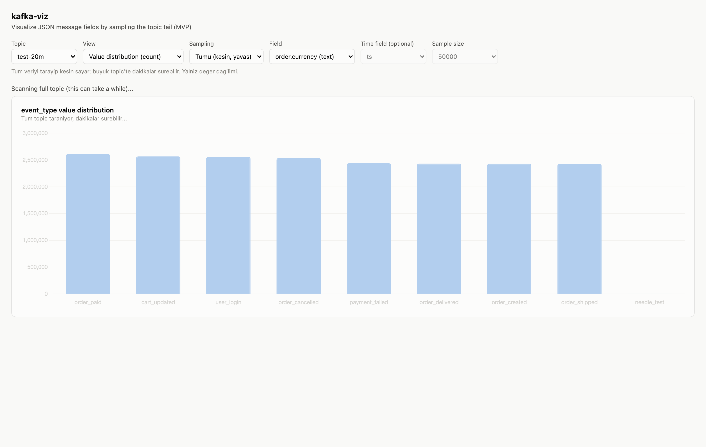
order.currency'ye çevrildiği an: grafik soluk, meta "taranıyor";
eski "%100" gösterilmiyor (düzeltilen davranış).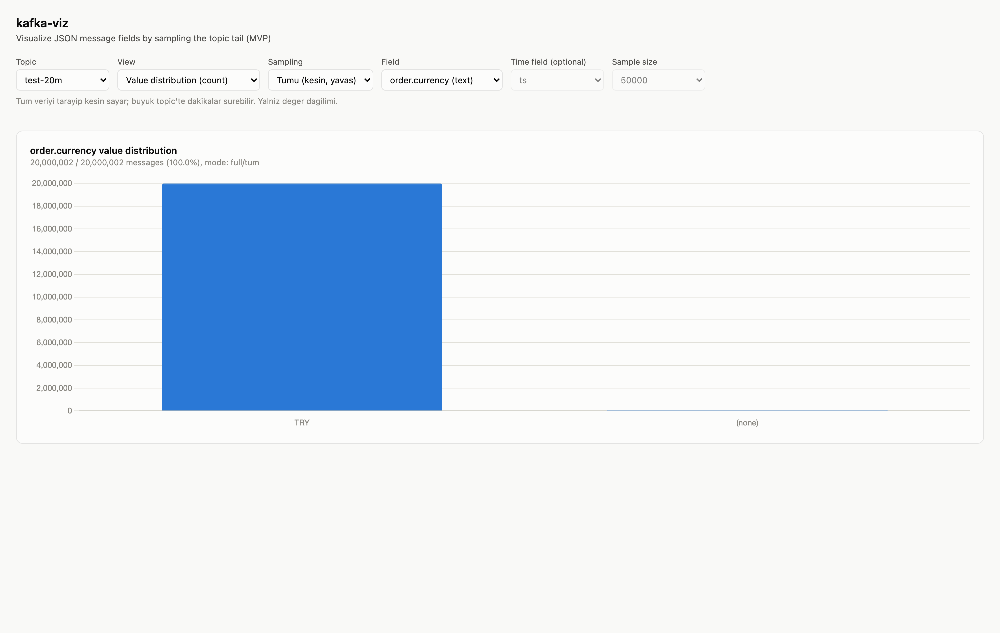
order.currency = neredeyse
tümü TRY, kesin sayım (%100).Tüm parçalar tek bir docker-compose dosyasında toplandı ve önlerine bir yönlendirici (nginx) konuldu. Dışarıya açılan tek port var: 80.
cd kafka-ui-demo docker compose up -d
| Adres | Açılan |
|---|---|
http://localhost/ | Kafka UI (fork) |
http://localhost/viz/ | Grafik aracı (kafka-viz) |
Compose içinde 4 servis ayağa kalkar: Kafka (demo broker), Kafka UI (fork imajı
kafka-ui-fix:local), kafka-viz ve nginx yönlendirici.
Demo kurulumu bu repo dışında duran kafka-ui-demo/docker-compose.yml dosyasından
yönetildi. Kafbat UI'ın kendi örnek compose dosyaları ise bu repoda
documentation/compose/ altında duruyor. Ben tüm upstream örneklerini kullanmadım;
sadece demo için gereken parçaları aldım: Kafka, UI, kafka-viz ve nginx.
kafka-ui-demo/docker-compose.yml. Bu repo içindeki documentation/compose/
klasörü Kafbat'ın örnekleri; LDAP, SASL, SSL, Schema Registry, Kafka Connect gibi her örneği bu
kurulumda kullanmıyoruz.| Değiştirilecek şey | Compose ayarı | Ne zaman? |
|---|---|---|
| Kafka broker adresi | KAFKA_CLUSTERS_0_BOOTSTRAPSERVERS | Demo broker yerine şirket cluster'ına bağlanırken. |
| Dinamik cluster ekleme | DYNAMIC_CONFIG_ENABLED=true | Cluster'ları compose değiştirmeden arayüzden eklemek için. |
| Arama tarama limiti | KAFKA_POLLING_MAXSCANNEDRECORDS | Sonuçsuz aramanın en fazla kaç kayıt tarayacağını değiştirmek için. |
| Arama zaman limiti | KAFKA_POLLING_RESPONSETIMEOUTMS | Bir polling isteğinin en fazla kaç ms süreceğini değiştirmek için. |
| Broker JMX portu | KAFKA_JMX_PORT, KAFKA_JMX_HOSTNAME | Metrics sekmesinin broker metriklerini okuyabilmesi için. |
| UI metrik kaynağı | KAFKA_CLUSTERS_0_METRICS_TYPE=JMX, KAFKA_CLUSTERS_0_METRICS_PORT=9101 | UI'ın JMX'i nereden okuyacağını söylemek için. |
| Kalıcı Kafka verisi | Kafka servisinde volume mount | Container restart sonrası topic ve mesajların silinmemesi için. |
Şirket Kafka'sına bağlanmak: demo broker yerine gerçek broker adresini yazarsınız.
kafka-ui:
environment:
KAFKA_CLUSTERS_0_BOOTSTRAPSERVERS: broker1.company.local:9092,broker2.company.local:9092
Arama bütçesini büyütmek veya küçültmek: büyük topic'lerde sonuçsuz aramanın ne kadar derine ineceğini bu iki değer belirler.
kafka-ui:
environment:
KAFKA_POLLING_MAXSCANNEDRECORDS: 500000
KAFKA_POLLING_RESPONSETIMEOUTMS: 30000
Metrics sekmesini çalıştırmak: Kafka broker JMX açar, UI da o porttan okur.
demo-kafka:
environment:
KAFKA_JMX_PORT: 9101
KAFKA_JMX_HOSTNAME: demo-kafka
kafka-ui:
environment:
KAFKA_CLUSTERS_0_METRICS_TYPE: JMX
KAFKA_CLUSTERS_0_METRICS_PORT: 9101
DYNAMIC_CONFIG_ENABLED=true)
yeni cluster, compose dosyasına dokunmadan arayüz üzerinden eklenebilir.KAFKA_CLUSTERS_0_BOOTSTRAPSERVERS değeri şirket broker adresiyle değiştirilir.Bir broker'ın Metrics sekmesine basınca ekran boş kalıyor ve tarayıcı konsolunda
Unexpected end of JSON input hatası çıkıyordu. Sebep tek kelimeyle eksik ayar:
kurulumda Kafka'ya bir metrik kaynağı (JMX) hiç tanımlanmamıştı. Kaynak olmayınca sunucu bu sekmeye
boş bir cevap dönüyor, arayüz de o boş cevabı okumaya çalışıp hata veriyordu. Kafka'nın kendisinde,
verinizde veya diğer ekranlarda bir sorun yoktu; etkilenen tek yer bu sekmeydi.
METRICS_TYPE: JMX).Artık Metrics sekmesi broker ve JVM metriklerini (istek oranları, kuyruk boyutları, bellek vb.) gerçek değerlerle getiriyor ve konsol hatası kalmadı.
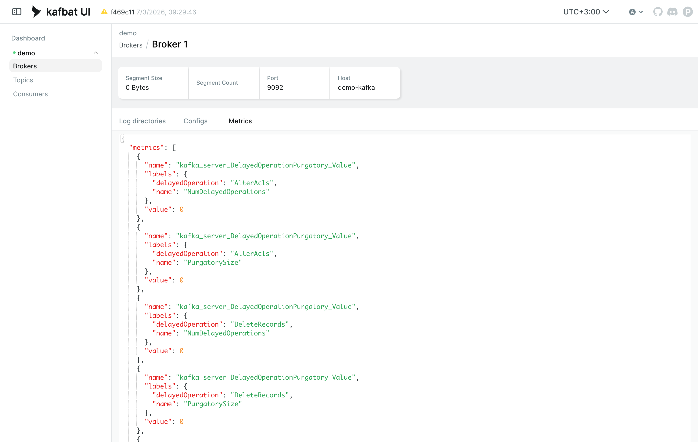
kafka_server_...); tarayıcı konsolunda hata yok. Otomatik test (Playwright)
0 konsol hatası ve veri render ile geçti.| Taban | Kafbat UI (github.com/kafbat/kafka-ui), Apache-2.0 lisans, upstream commit d0e3a7e üzerine. |
| Fork dalı | fix/search-polling-budget (arama bütçesi, hedefli arama, tüm topic arama, sıralama, tarih aralığı + Grafik butonu). |
| Grafik aracı | kafka-viz: Python (Flask) + Chart.js, bağımsız küçük servis, salt okur. Modlar: son N / yayılmış / tümü. Yönlendirici (nginx) full tarama için uzun timeout ile ayarlı. |
| Test ortamı | test-20m topic'i: 20.000.002 sentetik JSON mesaj, 6 partition, tek broker. |
| Doğrulama | Bu dokümandaki tüm ekran görüntüleri 03.07.2026'da çalışan ortamdan alındı. |
Sorular için: Kadir (kadiraycareer@gmail.com)